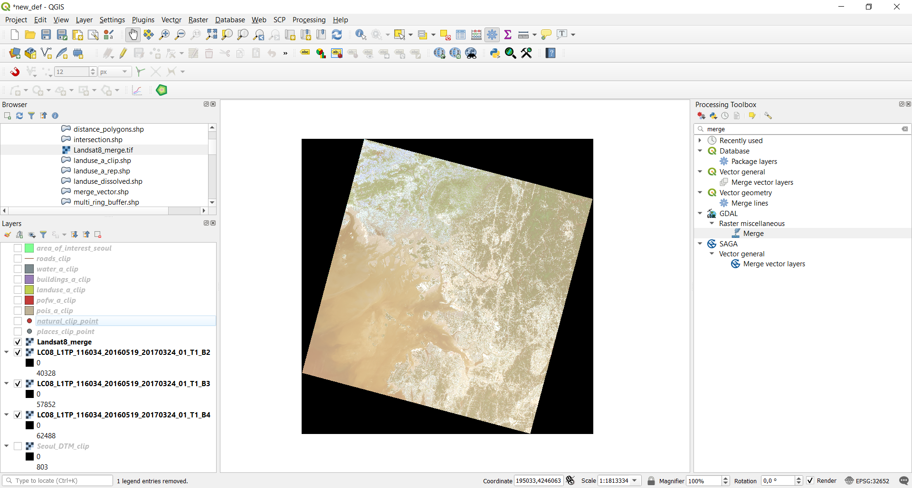
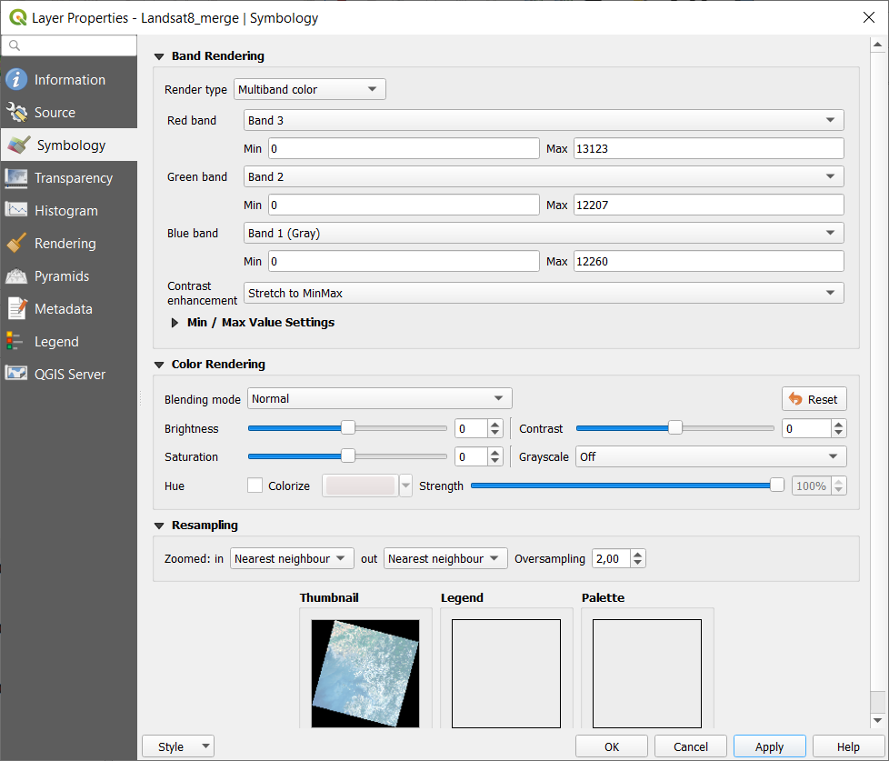
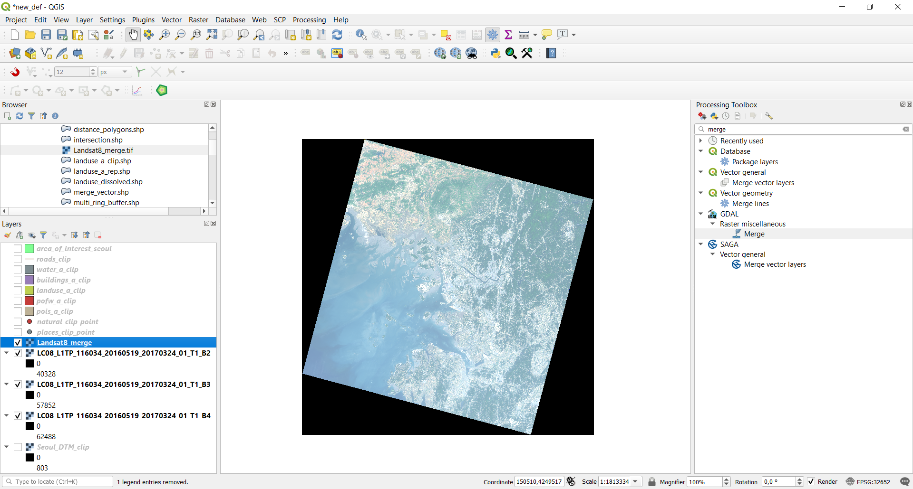

4.1. Merge raster¶
We see now how to Merge multiple raster layers. We do it by combining the Landsat8 imagery bands with the aim of creating a multi-band raster.
To do so, we have to first add the raster bands into our QGIS project. From the the Browser panel, navigate to the raster data folder and into
the folder containing the Landsat data (Landsat8_20160519_20170324_01_T1). Then add the raster ending with B2, B3 and B4
(in Landsat images they represent respectively the blue, green and red channels). These images are already in our project CRS (EPSG:32652 - WGS 84 / UTM zone 52N)
so once you added the raster data, go directly to Raster->Miscellaneous->Merge, and put this input parameters:
- Input layers: click on the left symbol and select the Landsat_B2, Landsat_B3 and Landsat_B4 images (
LC08_L1TP_116034_20160519_20170324_01_T1_B2.TIF,LC08_L1TP_116034_20160519_20170324_01_T1_B3.TIFandLC08_L1TP_116034_20160519_20170324_01_T1_B4.TIF)- Tick the “Place each input file into a separate band” checkbox: when not activated, this option is used to merge raster layers covering different area and not overlapping between each other. In our case we want to merge images that totally overlap between one another
- Output data type: change it to UInt16 to be consistent with the original rasters
- Merged: the path and the name of the output raster layer. Note that if left empty a temporary layer will be created
{kind=link}
Fig. 4.1.1 The merge raster function window
The obtained multiband raster at first will look like this:
{kind=link}
To obtain what is called a “true color image”, so a multiband raster whose color resembles the real ones, you have to change the band assigned to each
color. To do so, right-click on the Landsat-merge raster and select “Properties”. Go in the “Symbology” section, and you will see a window like the following:
{kind=link}
Then, assign to the Red band the Band 3, to the Green band the Band 2 and to the Blue band the Band 1.
{kind=link}
Click “Ok” and the true color map obtained should look like this:
{kind=link}
Note
This is not an accurate true color map because there was no atmospheric correction applied to the Landsat images, so you’ll find that its colors are brighter than the real ones.